The goal of this homework is to practice some basic data exploration and data viz in guided settings.
9 Exercise 0
9.1 Part a
We’ll be using some data stored in the mosaic, mosaicData and fivethirtyeight packages. Follow the instructions from Activity 3 to:
Check whether you already have these packages.
If not, install them.
9.2 Part b
Code
# Load packages we'll need for HW 2: tidyverse, mosaic, fivethirtyeight (mosaicData will be loaded automatically when loading the mosaic package)library(tidyverse)
── Attaching core tidyverse packages ──────────────────────── tidyverse 2.0.0 ──
✔ dplyr 1.1.4 ✔ readr 2.1.5
✔ forcats 1.0.0 ✔ stringr 1.5.1
✔ ggplot2 3.5.1 ✔ tibble 3.2.1
✔ lubridate 1.9.3 ✔ tidyr 1.3.1
✔ purrr 1.0.2
── Conflicts ────────────────────────────────────────── tidyverse_conflicts() ──
✖ dplyr::filter() masks stats::filter()
✖ dplyr::lag() masks stats::lag()
ℹ Use the conflicted package (<http://conflicted.r-lib.org/>) to force all conflicts to become errors
Code
library(mosaic)
Registered S3 method overwritten by 'mosaic':
method from
fortify.SpatialPolygonsDataFrame ggplot2
The 'mosaic' package masks several functions from core packages in order to add
additional features. The original behavior of these functions should not be affected by this.
Attaching package: 'mosaic'
The following object is masked from 'package:Matrix':
mean
The following objects are masked from 'package:dplyr':
count, do, tally
The following object is masked from 'package:purrr':
cross
The following object is masked from 'package:ggplot2':
stat
The following objects are masked from 'package:stats':
binom.test, cor, cor.test, cov, fivenum, IQR, median, prop.test,
quantile, sd, t.test, var
The following objects are masked from 'package:base':
max, mean, min, prod, range, sample, sum
The Birthdays dataset in the mosaic package includes information on births in the United States. Run the chunk below which wrangles this information into a new dataset, daily_births, which records the total number of births per day in the U.S. between 1969 and 1988.
Important
Use daily_births, not Birthdays in the exercises.
Code
# Create the daily_births dataset# Don't worry about the code. We'll learn this in the next unit!data("Birthdays")daily_births <- Birthdays |>group_by(date) |>summarize(births =sum(births)) |>mutate(year =year(date), month =month(date, label =TRUE),day_of_month =mday(date),day_of_week =wday(date, label =TRUE))
10.1 Part a
Let’s get to know the data! Complete the tasks indicated by each comment in the chunk below. Put your code directly after the relevant comment.
Code
# Determine the number of data points we havenrow(daily_births)
[1] 7305
Code
# Check out the first 6 rows of the datasethead(daily_births)
# A tibble: 6 × 6
date births year month day_of_month day_of_week
<dttm> <int> <dbl> <ord> <int> <ord>
1 1969-01-01 00:00:00 8486 1969 Jan 1 Wed
2 1969-01-02 00:00:00 9002 1969 Jan 2 Thu
3 1969-01-03 00:00:00 9542 1969 Jan 3 Fri
4 1969-01-04 00:00:00 8960 1969 Jan 4 Sat
5 1969-01-05 00:00:00 8390 1969 Jan 5 Sun
6 1969-01-06 00:00:00 9560 1969 Jan 6 Mon
Code
# Check out the structure / class of each variable in the dataset (1 line of code)str(daily_births)
Notice from your work in part a that day_of_week and month are special types of categorical variables: Ord.factors or ordinal factors. Explain what makes day_of_week and monthordinal.
Important
Looking up a definition of “ordinal” is fair, but you need to interpret the definition in the context of the variables here.
Note
day_of_week and month are ordinal because they occur in a specific order. The days of the week and months of the year each have a specific place within the calendar and they are defined by their order relative to one another.
10.3 Part c
What are the units of observation?
Note
Individual birthdays
11 Exercise 2
Our general goal is to understand how births vary from day to day. Let’s start by focusing on just the births variable.
11.1 Part a
Construct two plots of births. Each plot should use a different layer / geometric element.
Code
# Plot 1ggplot(daily_births, aes(y =births, x =month))+geom_boxplot()
`stat_bin()` using `bins = 30`. Pick better value with `binwidth`.
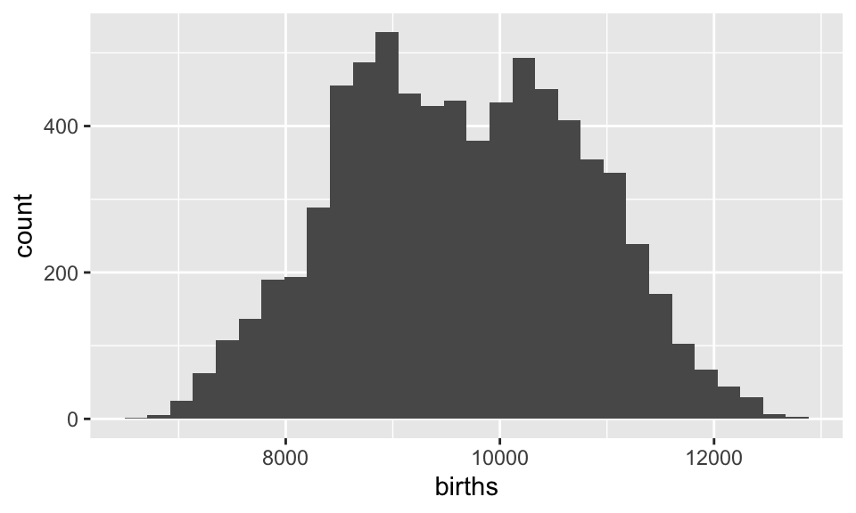
11.2 Part b
Summarize your observations about daily births in the U.S. Tell a cohesive story here (not a list of distinct observations) that incorporates important aspects of quantitative variables: range, distribution / shape, typical outcome, outliers.
Note
The data on daily births in the U.S. reveals a consistently high birth rate, with an average of over 9,000 births per month. Although there are fluctuations throughout the year, the most notable increases occur in July, August, and September. During these months, births rise to 10,000 or more. This may be related to the holidays. The overall distribution of births appears quite stable, with no significant outliers that would indicate unusual spikes or dips. The histogram supports this consistency, showing a relatively uniform spread of births across the year. However, it does have two slight peaks so I suppose we would call it bimodal, though they are so minor that I hesitate to do so. Minor variations exist throughout the plots, but they are not large enough to be considered statistically significant or particularly notable, which reaffirms the steady nature of birth rates over time.
12 Exercise 3
Your plots above illustrate that there’s something interesting happening here! Perhaps it can be explained by changes in birth rates over time. For example, we might wonder: Have births increased or decreased? Have there been any peaks or valleys in births? Are there any seasonal trends?
12.1 Part a
Construct a plot of births over time. Only use 2 variables in your plot and make sure that every data point is represented in the plot (not just a summary of trends). We’ll come back to this later.
ggplot(daily_births, aes(y =births, x =month))+geom_point()
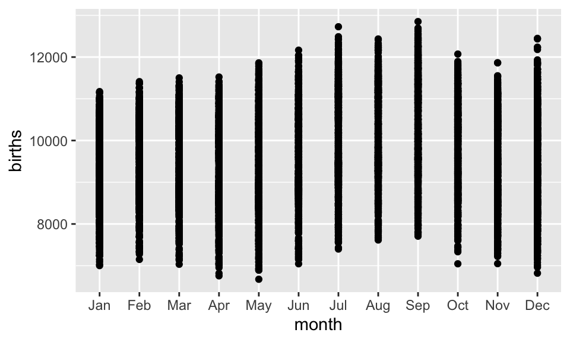
12.2 Part b
Summarize your observation about births over time. Be sure to comment on the following:
What are the longer-term birth trends over time (on the scale of years)?
Are there any seasonal trends within years (on the scale of months)?
What other interesting or unusual patterns do you notice?!?
Note
Recorded birth rates reached an all-time low in 1973, while 1988 marked the highest number of births in the data provided. Over the longer term, birth rates show relative consistency, though there are small fluctuations across decades.
On a seasonal level (within years), birth rates also exhibit mild fluctuations from month to month. However, the overall range of possible birth numbers across both months and years remains quite stable, indicating a general consistency in birth trends over time.
In summary, while there are slight variations, the data suggests that birth rates tend to remain fairly steady over both long-term (yearly) and short-term (monthly) periods.
13 Exercise 4
Your above plot of births over time has an interesting pattern: there seem to be 2-3 distinct groups of points. Let’s sleuth it out.
13.1 Part a
Starting from your plot of births over time from above, add a new scale / variable that explains the distinction between the distinct groups.
Important
Use your intuition–What variables do we have that might explain the 2 groups? and play around. If you get stuck, move on to Exercise 5 and come back.
Code
ggplot(daily_births, aes(y =births, x =month))+geom_boxplot()
Code
ggplot(daily_births, aes(y= births, x= year, color = day_of_week)) +geom_point()
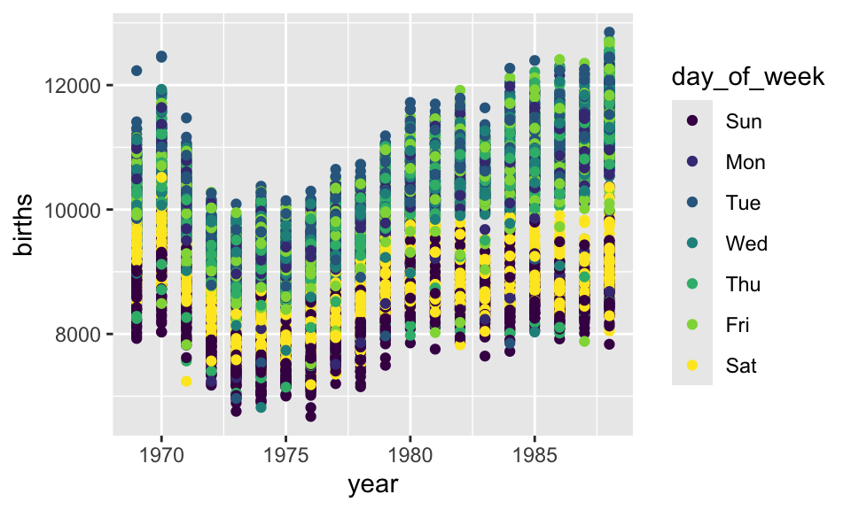
13.2 Part b
Explain in words what is going on here (e.g. “over time, there tend to be more births on… than on….”) and why you think this is happening. NOTE: The “why” might be challenging, so just do your best.
Note
Over time, it seems that there tend to be more births on weekdays than on weekends. Tuesday, Wednesday, and Friday all seem to have hosted the most births across the span of the multiple decades. Contradistingly, Sunday seems to have hosted the fewest births across all the decades, with Saturday barely hosting just a few more.
Over time, it seems that there tend to be more births on weekdays than on weekends. Tuesday, Wednesday, and Friday have consistently had the highest number of births across multiple decades. In contrast, Sunday has hosted the fewest births, with Saturday showing only slightly more.
One possible reason for this trend is the increasing prevalence of scheduled births, such as C-sections or induced labor, which might be more often planned for weekdays. I assume doctors and medical teams might avoid scheduling non-emergency procedures (including planned births) over the weekend, which could explain the drop in births on Saturdays and Sundays. Natural births, which are less predictable, likely account for the smaller number of weekend births.
14 Exercise 5
Let’s dig into weekly and monthly birth trends.
14.1 Part a
Construct 2 plots that illustrate how birth rates might vary by month, one using density plots and another using boxplots. One of these will be more useful than the other!
Code
ggplot(daily_births, aes(y =births, x =month))+geom_boxplot()
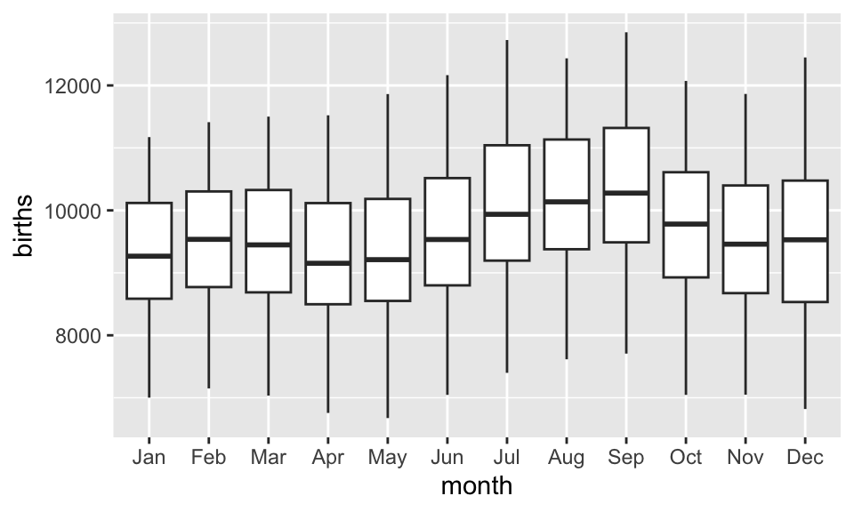
Code
ggplot(daily_births, aes(y =births, x =month))+geom_density()
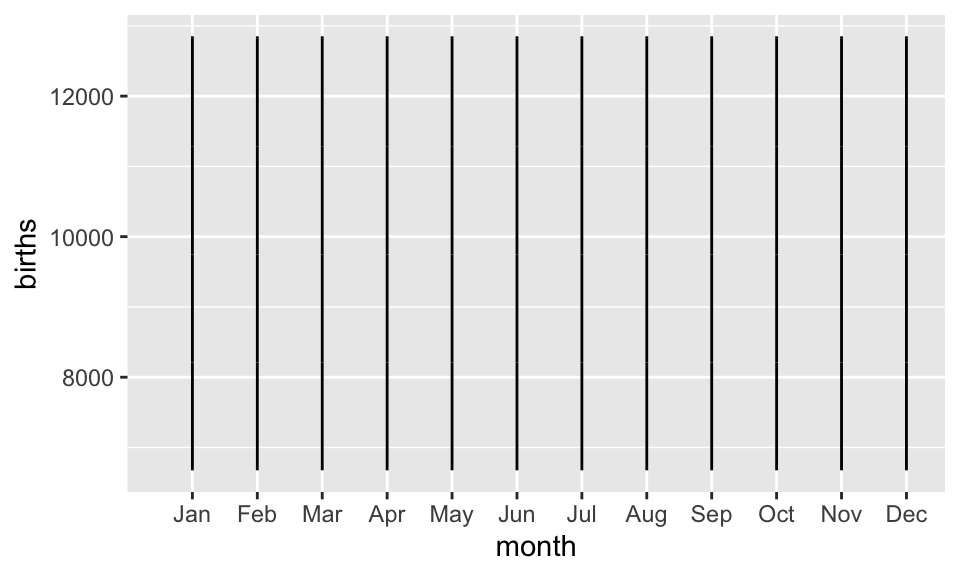
Clearly, the boxplot is more useful than the density plot.
14.2 Part b
Construct a plot that illustrates how birth rates might vary by day of the week.
Code
ggplot(daily_births, aes(y =births, x =day_of_week))+geom_boxplot()
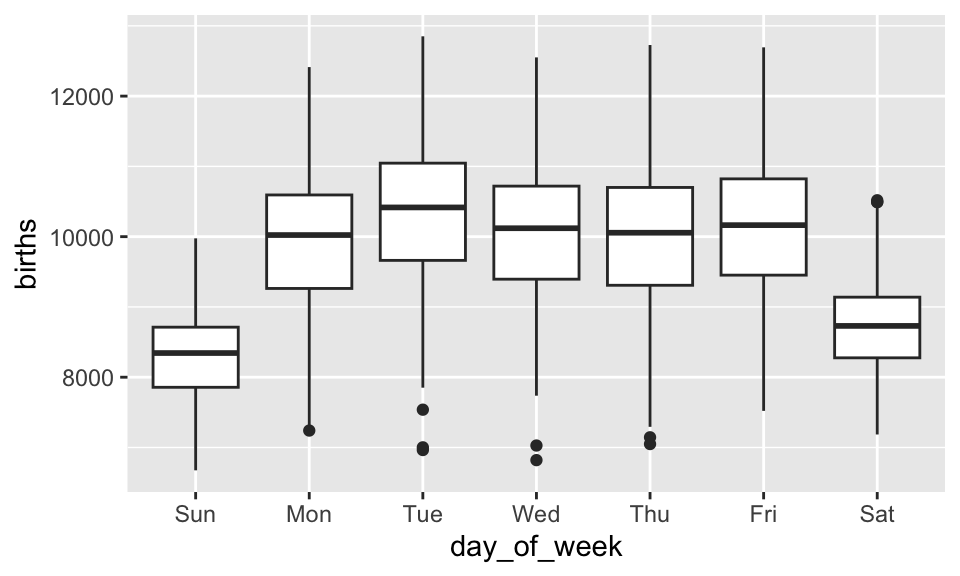
14.3 Part c
Summarize your observations from parts a and b. Do birth rates tend to be higher in some months than others? Or higher on some days of the weeks than others? Explain.
Important
If you skipped Exercise 4, you now have the hints.
Note
Birthrates are higher on weekdays than they are on weekends, with Tuesday, Wednesday, and Friday hosting the highest birth rates. However, birthrates across the months are essentially consistent. This is likely related to the fact that planned births are planned for weekdays because it is more operationally effective for doctors and medical staff. That said, though the specific day a procedure like a c-section occurs may be planned, no one really has any control over the month during which the baby will be ready.
15 Exercise 6
In the remaining exercises, we’ll explore new data. The “Bechdel test” tests whether movies meet the following criteria:
there are at least 2 characters that identify as women
these characters talk to each other
at least 1 time, they talk about something other than men
In the fivethirtyeight.com article “The Dollar-And-Cents Case Against Hollywood’s Exclusion of Women”, the authors analyze which Hollywood movies do/don’t pass the test. Their data are available in the fivethirtyeight package
Run the chunk below which wrangles this information into a new dataset, new_bechdel, which tidies up some of the categorical variables.
Code
# Create the new_bechdel dataset# Don't worry about the code. We'll learn this in the next unit!data(bechdel)new_bechdel <- bechdel |>mutate(clean_test =factor(clean_test, c("nowomen", "notalk", "men", "dubious", "ok"))) |>mutate(half_decades =cut(year, breaks =seq(1969, 2014, by =5)))
Important
Use new_bechdel, not bechdel in the exercises.
Before using the new_bechdel data, check out the codebook by typing ?bechdel in the CONSOLE.
15.1 Part a
Construct a plot that addresses the following research question: Do bigger budgets (budget_2013) pay off with greater box office returns (domgross_2013)? In constructing this plot:
Include a layer that represents each individual film in the dataset. There are a lot of data points, so use transparency to improve the visualization.
Include a layer that highlights the trends in this relationship
--> Trend line (lm)
Pay attention to which of these is the response variable and which is the predictor.
ggplot(new_bechdel, aes(x = budget_2013, y = domgross_2013)) +geom_point(alpha =0.5, color="darkgreen") +# Points for individual films with transparency+geom_smooth(method="lm", color="pink")
`geom_smooth()` using formula = 'y ~ x'
Warning: Removed 18 rows containing non-finite outside the scale range
(`stat_smooth()`).
Warning: Removed 18 rows containing missing values or values outside the scale range
(`geom_point()`).
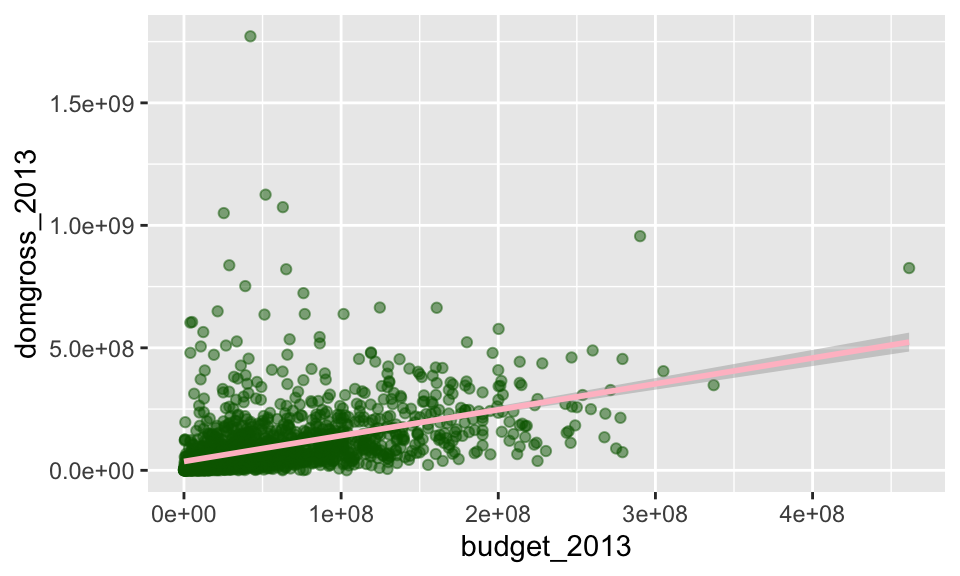
Code
labs(title ="Relationship Between Budget and Box Office Returns",x ="Budget (2013 dollars)",y ="Domestic Gross (2013 dollars)" )
ggplot(new_bechdel, aes(x = budget_2013, y = domgross_2013)) +geom_point(alpha =0.5, color="darkgreen") +# Points for individual films with transparency+geom_line(method="lm", color="pink")
Warning in geom_line(method = "lm", color = "pink"): Ignoring unknown
parameters: `method`
Warning: Removed 18 rows containing missing values or values outside the scale range
(`geom_point()`).
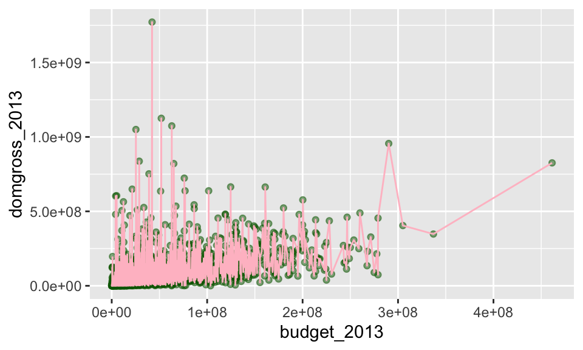
Code
labs(title ="Relationship Between Budget and Box Office Returns",x ="Budget (2013 dollars)",y ="Domestic Gross (2013 dollars)" )
Create new plot, which tweaks the plot in part a, that addresses the following research question: Does the dependence of box office returns on budget differ among films that do and do not pass the Bechdel test? In examining the Bechdel test, use a variable that simply captures PASS or FAIL for each film.
Code
ggplot(new_bechdel, aes(x = budget_2013, y = domgross_2013, color=binary)) +geom_point(alpha =0.5) +# Points for individual films with transparency+geom_smooth(method="lm", color="black")+labs( title ="Relationship Between Budget and Box Office Returns",x ="Budget (2013 dollars)",y ="Domestic Gross (2013 dollars)" )
`geom_smooth()` using formula = 'y ~ x'
Warning: Removed 18 rows containing non-finite outside the scale range
(`stat_smooth()`).
Warning: Removed 18 rows containing missing values or values outside the scale range
(`geom_point()`).
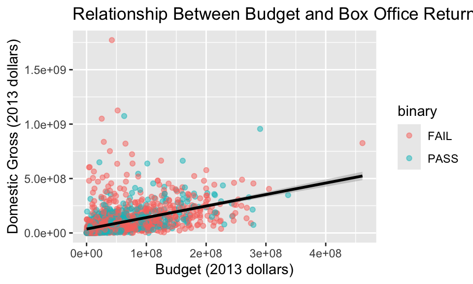
15.3 Part c
Summarize your observations about the relationship between box office returns and budget, and how (if at all) this differs between films that do and do not pass the Bechdel test.
Note
There is a moderately strong positive correlation between a film’s budget and box office returns. However, there are a lot of outliers which indicate that some films brought in a lot of revenue despite being low budget in comparison to others. I do not see very strong evidence that a film’s result on the Bechdel test will greatly impact it’s box office returns or have much to do with it’s budget. However, it is important to note that the film with the highest budget failed the Bechdel test and the film with that brought in the highest box office returns also failed the Bechdel test. I am inclined to say that films that fail the Bechdel test tend to do better, but the correlation is not super, super strong so I am hesitant.
I also wonder if some of the high budget films might have brought in high box office returns because well-known actors or a well-known director had something to do with the film and that built a lot of anticipation for it, making people more likely to want to see it.
16 Exercise 7
The clean_test variable goes into more detail than the binary variable. Not only does it indicate whether a film passes the test, it indicates why a failing film fails. Read more about it in the codebook.
16.1 Part a
Construct a plot of the clean_test variable that allows us to explore the number of films that fall into each category.
ggplot(new_bechdel, aes(x = budget_2013, y = domgross_2013, color=clean_test)) +geom_point(alpha =0.5) +# Points for individual films with transparency+geom_smooth(method="lm", color="black")+labs( title ="Relationship Between Budget and Box Office Returns",x ="Budget (2013 dollars)",y ="Domestic Gross (2013 dollars)" )
`geom_smooth()` using formula = 'y ~ x'
Warning: Removed 18 rows containing non-finite outside the scale range
(`stat_smooth()`).
Warning: Removed 18 rows containing missing values or values outside the scale range
(`geom_point()`).
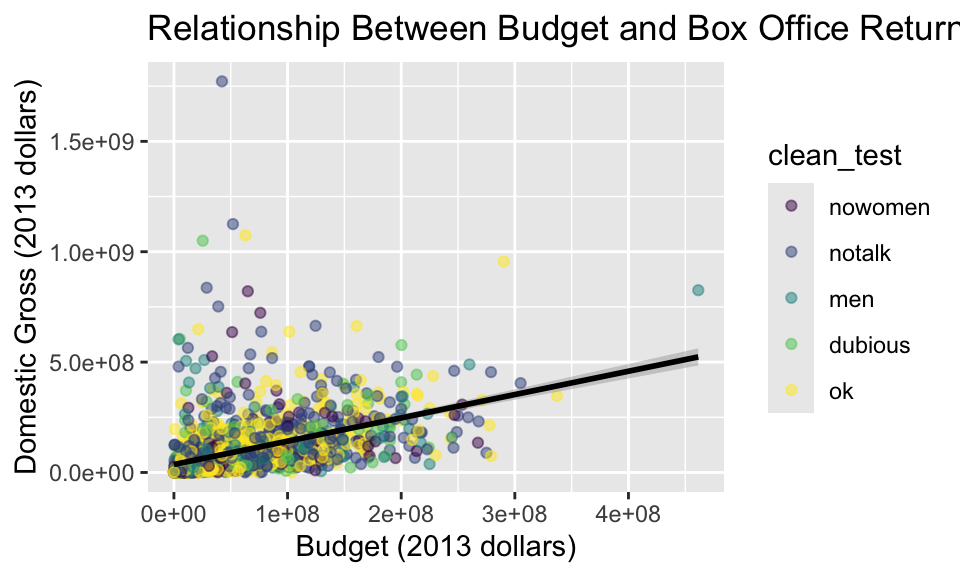
16.2 Part b
Among films that fail the Bechdel test, what’s the primary reason?
Note
The primary reason films fail the Bechdel test is because no women talk throughout the movie. I am basing this off of the fact that the ‘clean_test’ named the category “notalk”. However, using my external knowledge about the Bechdel test, perhaps “notalk” is also meant to include films in which women do have some speaking rules, but there are no instances of a woman talking to a woman about something other than a man.
16.3 Part c
Consider two more questions: How are the films in the data set distributed across half decades, i.e. 5-year periods (half_decades)? And within each half_decade, how are the films distributed across Bechdel categories (clean_test)? Construct a single plot that answers both of these questions. Your y-axis should reflect counts, i.e. numbers of movies.
Code
ggplot(new_bechdel, aes(x = half_decades, fill = clean_test)) +geom_bar()+labs(title="Bechdel Test Results Sorted By Half Decade",y="Number of Movies",x="Half Decade")
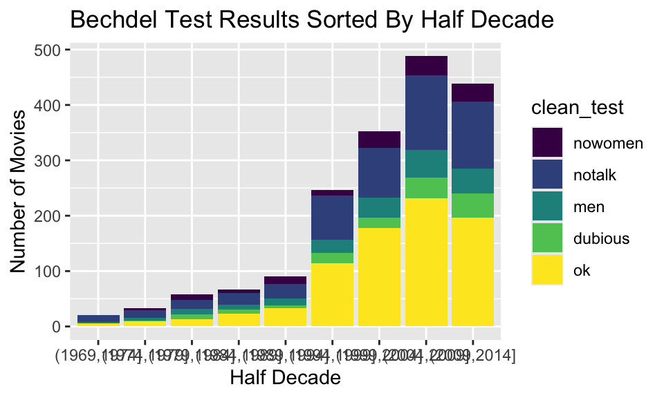
#How do I clean up the x axis? Each bin represents one half decade, but I don’t want the x axis to list each of the years in the half decade.
17 Exercise 8
NOTE: The following exercise is inspired by a similar exercise by Albert Kim, a fivethirtyeight package co-author.
The plot in Exercise 7 illustrates that more of the films in our dataset are more recent, but it’s not easy to examine the breakdown of the Bechdel test in each 5-year period. To that end, return to the fivethirtyeight.com article (linked above and in the codebook) and examine the plot titled “The Bechdel Test Over Time”.
17.1 Part a
Summarize the trends captured by this plot. (How has the representation of women in movies evolved over time?)
Note
Over time, there has been a notable increase in the number of films passing the Bechdel test. This indicates a gradual improvement in the representation of women in film. However, alongside this positive trend, there has also been a rise in films that fail to feature women in significant roles and/or that do not feature women speaking with each other about topics unrelated to men. This suggests that while some progress has been made, there remain significant challenges in achieving equitable representation, as many films still perpetuate stereotypes or overlook female narratives altogether.
17.2 Part b
Recreate this plot from the article! Your plot won’t look exactly like the authors’, but should be close to that below. You’ll need to add the following layer to get a similar color scheme:
Congratulation 🎉. You’re done with the homework. See the instruction at top of the Homework Assignments page for how to submit.
Source Code
---title: "Homework 2: Data Viz"execute: warning: truefig-height: 3fig-width: 5fig-align: centercode-fold: true---::: {.callout-caution title="Goals"}The goal of this homework is to practice some basic data exploration and data viz in guided settings.:::# Exercise 0## Part aWe'll be using some data stored in the `mosaic`, `mosaicData` and `fivethirtyeight` packages. Follow the instructions from Activity 3 to:- Check whether you already have these packages.- If not, install them.## Part b```{r}# Load packages we'll need for HW 2: tidyverse, mosaic, fivethirtyeight (mosaicData will be loaded automatically when loading the mosaic package)library(tidyverse)library(mosaic)library(fivethirtyeight)library(dplyr)library(lubridate)```\\\\# Exercise 1The `Birthdays` dataset in the `mosaic` package includes information on births in the United States. Run the chunk below which *wrangles* this information into a new dataset, `daily_births`, which records the total number of `births` per day in the U.S. between 1969 and 1988.::: {.callout-important title="Instructions"}Use `daily_births`, not `Birthdays` in the exercises.:::```{r}# Create the daily_births dataset# Don't worry about the code. We'll learn this in the next unit!data("Birthdays")daily_births <- Birthdays |>group_by(date) |>summarize(births =sum(births)) |>mutate(year =year(date), month =month(date, label =TRUE),day_of_month =mday(date),day_of_week =wday(date, label =TRUE))```## Part aLet's get to know the data! Complete the tasks indicated by each comment in the chunk below. Put your code directly after the relevant comment.```{r}# Determine the number of data points we havenrow(daily_births)``````{r}# Check out the first 6 rows of the datasethead(daily_births)``````{r}# Check out the structure / class of each variable in the dataset (1 line of code)str(daily_births)```\\## Part bNotice from your work in part a that `day_of_week` and `month` are special types of *categorical* variables: `Ord.factors` or **ordinal factors**. Explain what makes `day_of_week` and `month` *ordinal*.::: {.callout-important title="Instructions"}Looking up a definition of "ordinal" is fair, but you need to interpret the definition in the context of the variables here.:::::: {.callout-note title="Answer"}`day_of_week` and `month` are ordinal because they occur in a specific order. The days of the week and months of the year each have a specific place within the calendar and they are defined by their order relative to one another. :::\\## Part cWhat are the units of observation?::: {.callout-note title="Answer"}Individual birthdays:::\\\\# Exercise 2Our general goal is to understand how births vary from day to day. Let's start by focusing on just the `births` variable.## Part aConstruct *two* plots of `births`. Each plot should use a different layer / geometric element.```{r}# Plot 1ggplot(daily_births, aes(y =births, x =month))+geom_boxplot()``````{r}# Plot 2ggplot(daily_births, aes(x=births)) +geom_histogram()```## Part bSummarize your observations about daily births in the U.S. Tell a *cohesive* story here (not a list of distinct observations) that incorporates important aspects of quantitative variables: range, distribution / shape, typical outcome, outliers.::: {.callout-note title="Answer"}The data on daily births in the U.S. reveals a consistently high birth rate, with an average of over 9,000 births per month. Although there are fluctuations throughout the year, the most notable increases occur in July, August, and September. During these months, births rise to 10,000 or more. This may be related to the holidays. The overall distribution of births appears quite stable, with no significant outliers that would indicate unusual spikes or dips. The histogram supports this consistency, showing a relatively uniform spread of births across the year. However, it does have two slight peaks so I suppose we would call it bimodal, though they are so minor that I hesitate to do so. Minor variations exist throughout the plots, but they are not large enough to be considered statistically significant or particularly notable, which reaffirms the steady nature of birth rates over time.:::\\\\# Exercise 3Your plots above illustrate that there's something interesting happening here! Perhaps it can be explained by changes in birth rates over *time*. For example, we might wonder: Have births increased or decreased? Have there been any peaks or valleys in births? Are there any seasonal trends?## Part aConstruct a plot of births over time. Only use 2 variables in your plot and make sure that every data point is represented in the plot (not just a summary of trends). We'll come back to this later.```{r}ggplot(daily_births, aes(x=year, y=births))+geom_point()``````{r}ggplot(daily_births, aes(y =births, x =month))+geom_point()```## Part bSummarize your observation about births over time. Be sure to comment on the following:- What are the longer-term birth trends over time (on the scale of years)?- Are there any seasonal trends within years (on the scale of months)?- What other interesting or unusual patterns do you notice?!?::: {.callout-note title="Answer"}Recorded birth rates reached an all-time low in 1973, while 1988 marked the highest number of births in the data provided. Over the longer term, birth rates show relative consistency, though there are small fluctuations across decades.On a seasonal level (within years), birth rates also exhibit mild fluctuations from month to month. However, the overall range of possible birth numbers across both months and years remains quite stable, indicating a general consistency in birth trends over time.In summary, while there are slight variations, the data suggests that birth rates tend to remain fairly steady over both long-term (yearly) and short-term (monthly) periods.:::\\\\# Exercise 4Your above plot of births over time has an interesting pattern: there seem to be 2-3 distinct groups of points. Let's sleuth it out.## Part aStarting from your plot of births over time from above, add a new scale / variable that explains the distinction between the distinct groups. ::: {.callout-important title="Instructions"}Use your intuition--What variables do we have that might explain the 2 groups? and play around. If you get stuck, move on to Exercise 5 and come back.:::```{r}ggplot(daily_births, aes(y =births, x =month))+geom_boxplot()``````{r}ggplot(daily_births, aes(y= births, x= year, color = day_of_week)) +geom_point() ```## Part bExplain in words *what* is going on here (e.g. "over time, there tend to be more births on... than on....") and *why* you think this is happening. NOTE: The "why" might be challenging, so just do your best.::: {.callout-note title="Answer"}Over time, it seems that there tend to be more births on weekdays than on weekends. Tuesday, Wednesday, and Friday all seem to have hosted the most births across the span of the multiple decades. Contradistingly, Sunday seems to have hosted the fewest births across all the decades, with Saturday barely hosting just a few more. Over time, it seems that there tend to be more births on weekdays than on weekends. Tuesday, Wednesday, and Friday have consistently had the highest number of births across multiple decades. In contrast, Sunday has hosted the fewest births, with Saturday showing only slightly more.One possible reason for this trend is the increasing prevalence of scheduled births, such as C-sections or induced labor, which might be more often planned for weekdays. I assume doctors and medical teams might avoid scheduling non-emergency procedures (including planned births) over the weekend, which could explain the drop in births on Saturdays and Sundays. Natural births, which are less predictable, likely account for the smaller number of weekend births.:::\\\\# Exercise 5Let's dig into weekly and monthly birth trends.## Part aConstruct 2 plots that illustrate how birth rates might vary by month, one using density plots and another using boxplots. One of these will be more useful than the other!```{r}ggplot(daily_births, aes(y =births, x =month))+geom_boxplot()``````{r}ggplot(daily_births, aes(y =births, x =month))+geom_density()```Clearly, the boxplot is more useful than the density plot.## Part bConstruct a plot that illustrates how birth rates might vary by day of the week.```{r}ggplot(daily_births, aes(y =births, x =day_of_week))+geom_boxplot()```## Part cSummarize your observations from parts a and b. Do birth rates tend to be higher in some months than others? Or higher on some days of the weeks than others? Explain. ::: {.callout-important title="Instructions"}If you skipped Exercise 4, you now have the hints.:::::: {.callout-note title="Answer"}Birthrates are higher on weekdays than they are on weekends, with Tuesday, Wednesday, and Friday hosting the highest birth rates. However, birthrates across the months are essentially consistent. This is likely related to the fact that planned births are planned for weekdays because it is more operationally effective for doctors and medical staff. That said, though the specific day a procedure like a c-section occurs may be planned, no one really has any control over the month during which the baby will be ready. :::\\\\# Exercise 6In the remaining exercises, we'll explore new data. The "Bechdel test" tests whether movies meet the following criteria:- there are at least 2 characters that identify as women- these characters talk to each other- at least 1 time, they talk about something other than menIn the fivethirtyeight.com article ["The Dollar-And-Cents Case Against Hollywood's Exclusion of Women"](http://fivethirtyeight.com/features/the-dollar-and-cents-case-against-hollywoods-exclusion-of-women/), the authors analyze which Hollywood movies do/don't pass the test. Their data are available in the `fivethirtyeight` package\Run the chunk below which *wrangles* this information into a new dataset, `new_bechdel`, which tidies up some of the categorical variables.```{r}# Create the new_bechdel dataset# Don't worry about the code. We'll learn this in the next unit!data(bechdel)new_bechdel <- bechdel |>mutate(clean_test =factor(clean_test, c("nowomen", "notalk", "men", "dubious", "ok"))) |>mutate(half_decades =cut(year, breaks =seq(1969, 2014, by =5)))```::: {.callout-important title="Instructions"}- Use `new_bechdel`, not `bechdel` in the exercises.- Before using the `new_bechdel` data, check out the codebook by typing `?bechdel` in the **CONSOLE**.:::## Part aConstruct a plot that addresses the following research question: Do bigger budgets (`budget_2013`) pay off with greater box office returns (`domgross_2013`)? In constructing this plot:- Include a layer that represents each individual film in the dataset. There are a lot of data points, so use transparency to improve the visualization.- Include a layer that highlights the *trends* in this relationship --> Trend line (lm)- Pay attention to which of these is the *response* variable and which is the *predictor*.```{r}colnames(new_bechdel)``````{r}ggplot(new_bechdel, aes(x = budget_2013, y = domgross_2013)) +geom_point(alpha =0.5, color="darkgreen") +# Points for individual films with transparency+geom_smooth(method="lm", color="pink")labs(title ="Relationship Between Budget and Box Office Returns",x ="Budget (2013 dollars)",y ="Domestic Gross (2013 dollars)" )``````{r}ggplot(new_bechdel, aes(x = budget_2013, y = domgross_2013)) +geom_point(alpha =0.5, color="darkgreen") +# Points for individual films with transparency+geom_line(method="lm", color="pink")labs(title ="Relationship Between Budget and Box Office Returns",x ="Budget (2013 dollars)",y ="Domestic Gross (2013 dollars)" )```## Part bCreate new plot, which tweaks the plot in part a, that addresses the following research question: Does the dependence of box office returns on budget differ among films that do and do not pass the Bechdel test? In examining the Bechdel test, use a variable that simply captures PASS or FAIL for each film.```{r}ggplot(new_bechdel, aes(x = budget_2013, y = domgross_2013, color=binary)) +geom_point(alpha =0.5) +# Points for individual films with transparency+geom_smooth(method="lm", color="black")+labs( title ="Relationship Between Budget and Box Office Returns",x ="Budget (2013 dollars)",y ="Domestic Gross (2013 dollars)" )```## Part cSummarize your observations about the relationship between box office returns and budget, and how (if at all) this differs between films that do and do not pass the Bechdel test.::: {.callout-note title="Answer"}There is a moderately strong positive correlation between a film's budget and box office returns. However, there are a lot of outliers which indicate that some films brought in a lot of revenue despite being low budget in comparison to others. I do not see very strong evidence that a film's result on the Bechdel test will greatly impact it's box office returns or have much to do with it's budget. However, it is important to note that the film with the highest budget failed the Bechdel test and the film with that brought in the highest box office returns also failed the Bechdel test. I am inclined to say that films that fail the Bechdel test tend to do better, but the correlation is not super, super strong so I am hesitant. I also wonder if some of the high budget films might have brought in high box office returns because well-known actors or a well-known director had something to do with the film and that built a lot of anticipation for it, making people more likely to want to see it. :::\\\\# Exercise 7The `clean_test` variable goes into more detail than the `binary` variable. Not only does it indicate whether a film passes the test, it indicates *why* a failing film fails. Read more about it in the codebook.## Part aConstruct a plot of the `clean_test` variable that allows us to explore the number of films that fall into each category.```{r}ggplot(new_bechdel, aes(x = binary, fill=clean_test)) +geom_bar()``````{r}ggplot(new_bechdel, aes(x = budget_2013, y = domgross_2013, color=clean_test)) +geom_point(alpha =0.5) +# Points for individual films with transparency+geom_smooth(method="lm", color="black")+labs( title ="Relationship Between Budget and Box Office Returns",x ="Budget (2013 dollars)",y ="Domestic Gross (2013 dollars)" )```## Part bAmong films that fail the Bechdel test, what's the primary reason?::: {.callout-note title="Answer"}The primary reason films fail the Bechdel test is because no women talk throughout the movie. I am basing this off of the fact that the 'clean_test' named the category "notalk". However, using my external knowledge about the Bechdel test, perhaps "notalk" is also meant to include films in which women do have some speaking rules, but there are no instances of a woman talking to a woman about something other than a man.:::\## Part cConsider two more questions: How are the films in the data set distributed across half decades, i.e. 5-year periods (`half_decades`)? And within each `half_decade`, how are the films distributed across Bechdel categories (`clean_test`)? Construct a single plot that answers both of these questions. Your y-axis should reflect *counts*, i.e. numbers of movies.```{r}ggplot(new_bechdel, aes(x = half_decades, fill = clean_test)) +geom_bar()+labs(title="Bechdel Test Results Sorted By Half Decade",y="Number of Movies",x="Half Decade")```#How do I clean up the x axis? Each bin represents one half decade, but I don't want the x axis to list each of the years in the half decade. \\\\# Exercise 8NOTE: The following exercise is inspired by a similar exercise by Albert Kim, a `fivethirtyeight` package co-author.The plot in Exercise 7 illustrates that more of the films in our dataset are more recent, but it's not easy to examine the breakdown of the Bechdel test in each 5-year period. To that end, return to the fivethirtyeight.com article (linked above and in the codebook) and examine the plot titled "The Bechdel Test Over Time".## Part aSummarize the trends captured by this plot. (How has the representation of women in movies evolved over time?)::: {.callout-note title="Answer"}Over time, there has been a notable increase in the number of films passing the Bechdel test. This indicates a gradual improvement in the representation of women in film. However, alongside this positive trend, there has also been a rise in films that fail to feature women in significant roles and/or that do not feature women speaking with each other about topics unrelated to men. This suggests that while some progress has been made, there remain significant challenges in achieving equitable representation, as many films still perpetuate stereotypes or overlook female narratives altogether.:::\\## Part bRecreate this plot from the article! Your plot won't look *exactly* like the authors', but should be close to that below. You'll need to add the following layer to get a similar color scheme:```{r eval=FALSE}scale_fill_manual(values =c("red", "salmon", "pink", "steelblue1", "steelblue4"))``````{r, out.width = "800px",echo=FALSE, fig.alt='Proportional barplot of Bechdel test results across 5 year time periods. An increasing number of movies pass the Bechdel test over time but still only make up about 50% of the movies in the most recent time period.'}knitr::include_graphics("https://mac-stat.github.io/images/112/bechdel_hist.png")```#The template code would not run, so I used the new_bechdel data#My attempt (found below) uses the bechdel test data from earlier because the article data doesn't seem to load based on the above template```{r}bechdelggplot(new_bechdel, aes(x=half_decades, fill=clean_test))+geom_bar(position ="fill") ```\\\\# Finalize WorkCongratulation 🎉. You're done with the homework. See the instruction at top of the Homework Assignments page for how to submit.